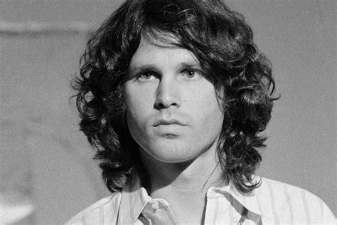
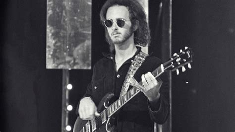
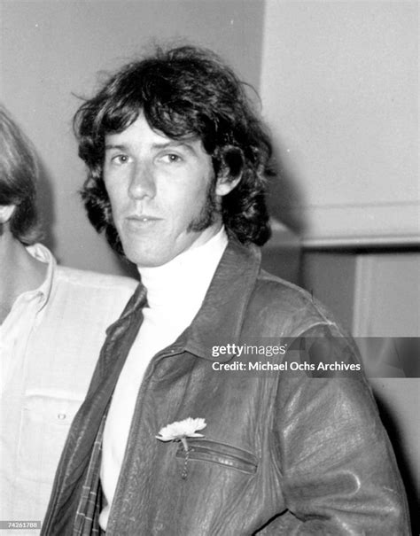

Band Members
The Doors was a band composed of four main members:
-

Singer and lyricist of The Doors
Known as the Lizard King, Morrison combined poetry, rebellion, as well as theatrical stage persona to re-establish the position of the rock frontman. His lyrics have addressed the freedom, mysticism and the darker aspects of human nature.
-
Co-founder, keyboardist of the Doors.
A classically trained musician, he blended rock, jazz, and blues into the band's distinctive psychedelic sound. His innovative keyboard bass lines defined many of The Doors' most iconic songs.
-

Songwriter and Guitarist in The Doors.
He is recognized as an expressive slide guitarist with the style of combining genres and has written the number one hit of the band known as Light My Fire. Krieger would later develop a prosperous career as a jazz guitarist with influence of flamenco and jazz.
-

Drummer of The Doors.
Densmore influenced the sound of the band by bringing into it energy and form of jazz and Brazilian beats, and also musical depth. In addition to The Doors, he was a writer, a theatrical writer, and arts supporter.
Each member of The Doors contributed to the band's unique sound and style, blending rock, blues, and psychedelic music. Jim Morrison's poetic lyrics and charismatic stage presence were a defining aspect of the band's identity, while Ray Manzarek's keyboard playing added a distinctive layer to their music. Robby Krieger's guitar work provided a dynamic range of sounds, and John Densmore's drumming added rhythm and energy to their performances. Together, they created a lasting legacy in the world of rock music.